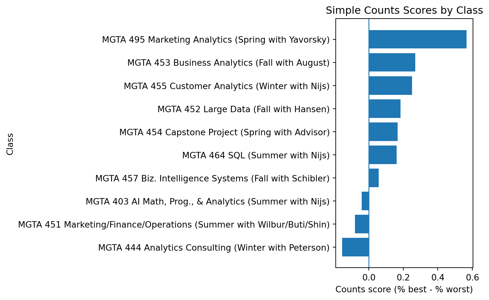
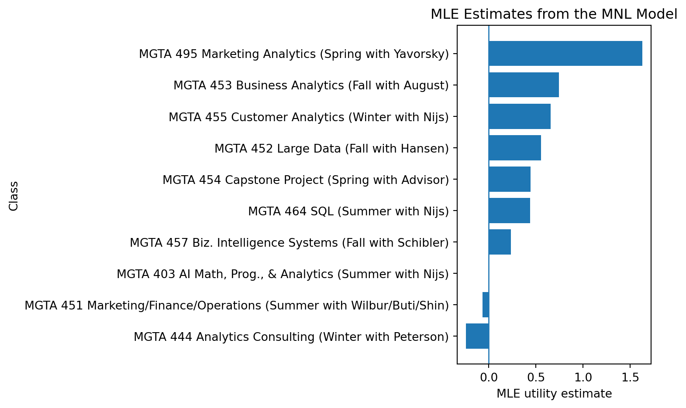
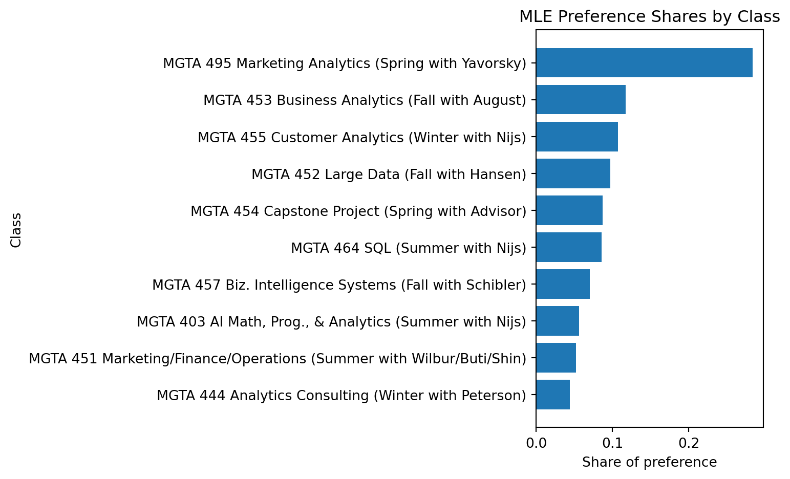
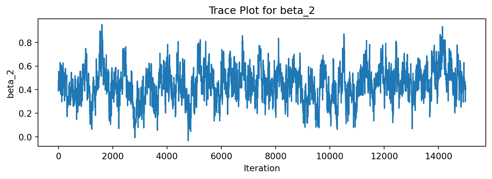
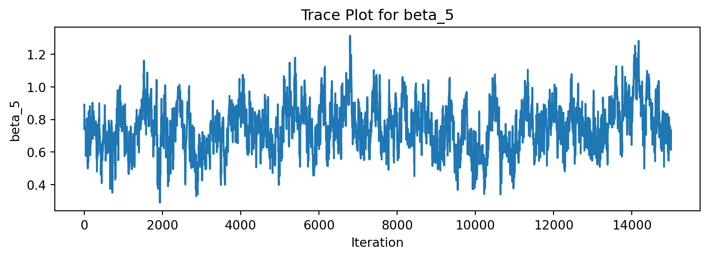
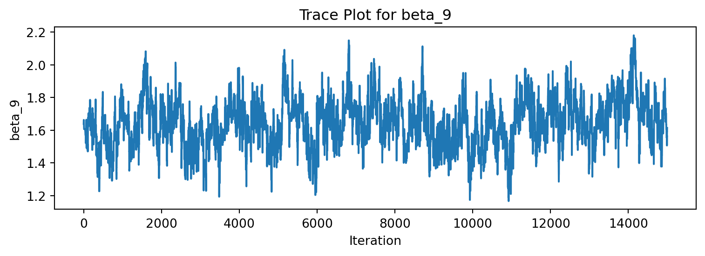
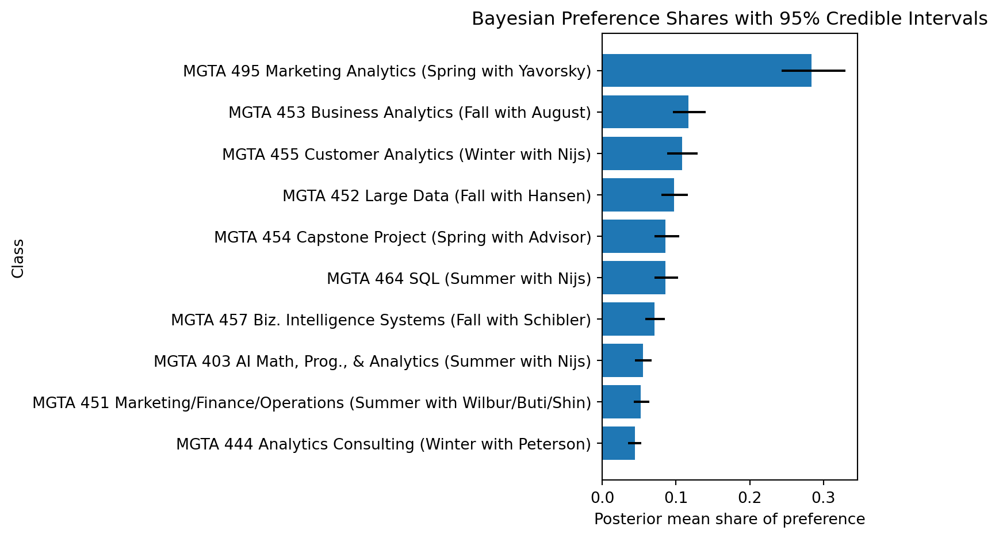
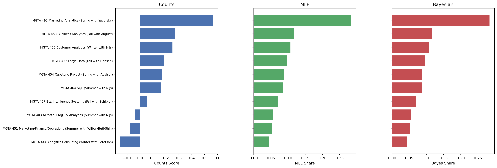

| Statistic | Value | |
|---|---|---|
| 0 | Number of respondents | 85 |
| 1 | Tasks per respondent | 15 |
| 2 | Items per task | 4 |
| 3 | Total labeled items | 10 |
MaxDiff Analysis of MSBA Class Preferences
Counts, MLE, and Bayesian estimation of the MNL model
Introduction
MaxDiff, also known as Best-Worst Scaling, is a survey method used to measure relative preferences between different items. Respondents repeatedly choose the most preferred and least preferred option from a small set of choices. In this survey, each screen showed four MSBA core classes, and respondents selected which class they liked the most and which they liked the least.
One reason MaxDiff is useful is that people are usually better at making comparisons than assigning consistent numeric ratings. Asking someone to pick a “best” and “worst” option forces clearer trade-offs and reduces the tendency for everyone to rate everything similarly.
In this blog, the ten items represent the ten core MSBA classes at UC San Diego Rady School of Management. The goal is to estimate students’ relative preferences for these classes using three different approaches: a simple counts analysis, a multinomial logit (MNL) model estimated with maximum likelihood, and a Bayesian version of the same MNL model using MCMC methods.
Although the three methods are based on different ideas, they should produce similar rankings of the classes. The main differences are in how they measure preference strength and how they capture uncertainty in the estimates.
The Data
The dataset contains responses from a MaxDiff survey about preferences for the ten core MSBA classes at UCSD Rady. Each respondent completed multiple choice tasks where they selected the most and least preferred class from a set of four options.
Basic Descriptives
Before doing any modeling, I first summarized the basic structure of the survey.
The survey included 85 respondents, and each respondent completed 15 MaxDiff tasks. Each task showed four options. The label file identifies ten official MSBA classes, so the later analysis focuses on those ten labeled items.
Sanity Check
Before using the data for any preference analysis, I wanted to make sure each MaxDiff task was recorded correctly. Since every task shows four classes, there should be exactly one class marked as the most preferred, one class marked as the least preferred, and two classes left unselected.
| Check | Count | |
|---|---|---|
| 0 | Valid tasks | 680 |
| 1 | Invalid tasks | 595 |
The sanity check shows that 680 respondent-task combinations follow the expected MaxDiff structure, while 595 are flagged during the validation step. The main reason is that the raw survey file includes an unmatched item that does not appear in the class label file. Since the blog focuses on the ten labeled MSBA classes, I use the labeled class data for the remaining analysis.
Item Exposure
Finally, I checked how often each class appeared across the survey. In a balanced MaxDiff design, the exposure counts should be relatively similar across items so that no class has an unfair advantage simply from being shown more often.
| Item | Class | Times Shown | |
|---|---|---|---|
| 0 | 1 | MGTA 403 AI Math, Prog., & Analytics (Summer w... | 332 |
| 1 | 2 | MGTA 464 SQL (Summer with Nijs) | 340 |
| 2 | 3 | MGTA 451 Marketing/Finance/Operations (Summer ... | 326 |
| 3 | 4 | MGTA 452 Large Data (Fall with Hansen) | 338 |
| 4 | 5 | MGTA 453 Business Analytics (Fall with August) | 327 |
| 5 | 6 | MGTA 444 Analytics Consulting (Winter with Pet... | 323 |
| 6 | 7 | MGTA 455 Customer Analytics (Winter with Nijs) | 335 |
| 7 | 8 | MGTA 454 Capstone Project (Spring with Advisor) | 330 |
| 8 | 9 | MGTA 495 Marketing Analytics (Spring with Yavo... | 330 |
| 9 | 10 | MGTA 457 Biz. Intelligence Systems (Fall with ... | 334 |
The exposure counts are very similar across the ten classes, which suggests that the MaxDiff design was reasonably balanced. No class appears to have been shown more or less often than the others, so the preference estimates later in the analysis are less likely to be driven by unequal exposure.
Counts Analysis
For the counts analysis, I calculated how often each class was shown, how often it was picked as best, and how often it was picked as worst. I then used the difference between the best percentage and worst percentage as a simple score. This gives a quick first look at preferences before using the MNL model.
| Item | Class | times_shown | times_best | times_worst | pct_best | pct_worst | score | |
|---|---|---|---|---|---|---|---|---|
| 8 | 9 | MGTA 495 Marketing Analytics (Spring with Yavo... | 330 | 199 | 12 | 60.3 | 3.6 | 0.567 |
| 4 | 5 | MGTA 453 Business Analytics (Fall with August) | 327 | 143 | 55 | 43.7 | 16.8 | 0.269 |
| 6 | 7 | MGTA 455 Customer Analytics (Winter with Nijs) | 335 | 155 | 71 | 46.3 | 21.2 | 0.251 |
| 3 | 4 | MGTA 452 Large Data (Fall with Hansen) | 338 | 122 | 60 | 36.1 | 17.8 | 0.183 |
| 7 | 8 | MGTA 454 Capstone Project (Spring with Advisor) | 330 | 124 | 69 | 37.6 | 20.9 | 0.167 |
| 1 | 2 | MGTA 464 SQL (Summer with Nijs) | 340 | 111 | 56 | 32.6 | 16.5 | 0.162 |
| 9 | 10 | MGTA 457 Biz. Intelligence Systems (Fall with ... | 334 | 74 | 55 | 22.2 | 16.5 | 0.057 |
| 0 | 1 | MGTA 403 AI Math, Prog., & Analytics (Summer w... | 332 | 76 | 90 | 22.9 | 27.1 | -0.042 |
| 2 | 3 | MGTA 451 Marketing/Finance/Operations (Summer ... | 326 | 75 | 101 | 23.0 | 31.0 | -0.080 |
| 5 | 6 | MGTA 444 Analytics Consulting (Winter with Pet... | 323 | 61 | 111 | 18.9 | 34.4 | -0.155 |

The counts analysis shows a pretty clear ranking across the classes. Marketing Analytics stands out the most, with a much higher score than the other classes. It was chosen as “best” very often and only rarely selected as “worst.” Business Analytics and Customer Analytics also received strong scores overall.
Most of the middle-ranked classes still have positive scores, which suggests that students generally viewed them favorably. However, the differences between those classes are fairly small.
At the bottom of the ranking, AI Math, Marketing/Finance/Operations, and Analytics Consulting were selected as “worst” more often than “best,” which led to negative scores. Overall, the results suggest that students had stronger preferences for some classes than others, especially for Marketing Analytics.
From MaxDiff Data to MNL Choices
Each MaxDiff task can be viewed as a sequence of MNL choices. First, the respondent chooses the “best” item from the full set of four classes. Then, after removing the best item, the respondent chooses the “worst” item from the remaining three classes.
In the MNL model, each class is assigned a utility parameter that represents its relative preference. Classes with larger utility values are more likely to be selected as “best,” while classes with lower utility values are more likely to be selected as “worst.”
Because only utility differences matter in the softmax probabilities, the model is not fully identified unless one coefficient is fixed as a reference. In this analysis, I set the first class utility equal to zero and estimated the remaining coefficients relative to that baseline.
| Record ID | Task | items | best_item | worst_item | |
|---|---|---|---|---|---|
| 0 | 69fb85fbd66b452e6decf4f7 | 1 | [5, 7, 4, 1] | 7 | 1 |
| 1 | 69fb85fbd66b452e6decf4f7 | 2 | [8, 3, 10, 9] | 10 | 8 |
| 2 | 69fb85fbd66b452e6decf4f7 | 3 | [3, 5, 2, 6] | 2 | 6 |
| 3 | 69fb85fbd66b452e6decf4f7 | 4 | [6, 4, 8, 7] | 7 | 6 |
| 4 | 69fb85fbd66b452e6decf4f7 | 5 | [2, 9, 7, 1] | 2 | 1 |
| Check | Value | |
|---|---|---|
| 0 | Number of valid choice tasks | 680 |
After reshaping the data, each row now represents one respondent task combination. For every task, the dataset stores the four items that were shown, along with the item selected as best and the item selected as worst.
This structure is more convenient for the MNL model because the likelihood function can process one task at a time. The reshaped data also confirms that there are 680 valid choice tasks available for the estimation step.
Likelihood function
The next step is to write the likelihood function for the MNL model. Given a set of utility parameters, the likelihood measures how probable the observed best and worst choices are under the model.
For each task, the model first computes the probability of the observed best choice from the full set of four items. Then, after removing the best item, it computes the probability of the observed worst choice from the remaining three items using flipped utilities. The total log-likelihood is the sum across all tasks.
The likelihood function loops through the choice tasks one at a time. For each task, it computes the probability of the observed best choice and the probability of the observed worst choice. These probabilities are converted into log form and added together across all tasks.
I fixed the first utility parameter equal to zero so that the remaining coefficients can be interpreted relative to the reference class.
MLE Estimation
| Item | Class | MLE Utility | |
|---|---|---|---|
| 8 | 9 | MGTA 495 Marketing Analytics (Spring with Yavo... | 1.630 |
| 4 | 5 | MGTA 453 Business Analytics (Fall with August) | 0.744 |
| 6 | 7 | MGTA 455 Customer Analytics (Winter with Nijs) | 0.656 |
| 3 | 4 | MGTA 452 Large Data (Fall with Hansen) | 0.555 |
| 7 | 8 | MGTA 454 Capstone Project (Spring with Advisor) | 0.443 |
| 1 | 2 | MGTA 464 SQL (Summer with Nijs) | 0.438 |
| 9 | 10 | MGTA 457 Biz. Intelligence Systems (Fall with ... | 0.236 |
| 0 | 1 | MGTA 403 AI Math, Prog., & Analytics (Summer w... | 0.000 |
| 2 | 3 | MGTA 451 Marketing/Finance/Operations (Summer ... | -0.067 |
| 5 | 6 | MGTA 444 Analytics Consulting (Winter with Pet... | -0.239 |

The MLE estimates are very similar to the earlier counts analysis. The same classes still appear near the top and bottom of the ranking, which suggests that the simple counts approach already captured most of the overall preference pattern in the data.
Marketing Analytics remains the strongest class by a fairly large margin, with the highest estimated utility in the model. Business Analytics and Customer Analytics also continue to receive relatively strong preference estimates.
At the lower end, Analytics Consulting and Marketing/Finance/Operations receive the smallest utility values. Their negative estimates suggest that respondents were less likely to choose them as best compared to the reference class.
One thing I noticed is that the MNL estimates create a little more separation between the classes than the counts scores did. Even though the rankings are similar overall, the utility estimates give a clearer sense of how strongly students preferred some classes over others.
MNL via Maximum Likelihood
The log-likelihood function was also defined in the previous section. Using that function, I estimated the MNL utility coefficients by maximum likelihood with the BFGS optimizer. The final negative log-likelihood value from the optimization is shown below.
| Statistic | Value | |
|---|---|---|
| 0 | Final negative log-likelihood | 1572.731 |
| Item | Class | beta_hat | SE | Preference Share | |
|---|---|---|---|---|---|
| 8 | 9 | MGTA 495 Marketing Analytics (Spring with Yavo... | 1.630 | 0.061 | 0.284 |
| 4 | 5 | MGTA 453 Business Analytics (Fall with August) | 0.744 | 0.115 | 0.117 |
| 6 | 7 | MGTA 455 Customer Analytics (Winter with Nijs) | 0.656 | 0.098 | 0.107 |
| 3 | 4 | MGTA 452 Large Data (Fall with Hansen) | 0.555 | 0.127 | 0.097 |
| 7 | 8 | MGTA 454 Capstone Project (Spring with Advisor) | 0.443 | 0.262 | 0.087 |
| 1 | 2 | MGTA 464 SQL (Summer with Nijs) | 0.438 | 0.455 | 0.086 |
| 9 | 10 | MGTA 457 Biz. Intelligence Systems (Fall with ... | 0.236 | 0.093 | 0.070 |
| 0 | 1 | MGTA 403 AI Math, Prog., & Analytics (Summer w... | 0.000 | NaN | 0.056 |
| 2 | 3 | MGTA 451 Marketing/Finance/Operations (Summer ... | -0.067 | 0.178 | 0.052 |
| 5 | 6 | MGTA 444 Analytics Consulting (Winter with Pet... | -0.239 | 0.343 | 0.044 |

The preference shares are easier to read than the raw utility estimates because they sum to 1 across the ten classes. A larger share means that the class receives a larger portion of the total estimated preference.
The MLE ranking is basically the same as the counts ranking from the previous section. Marketing Analytics is still clearly first, followed by Business Analytics and Customer Analytics. The bottom of the ranking is also the same, with Marketing/Finance/Operations and Analytics Consulting receiving the lowest preference shares.
MNL via Bayesian Estimation
For the Bayesian version, I fit the same MNL model but treat the utility coefficients as unknown parameters with a prior distribution. I use a weakly informative normal prior and then sample from the posterior using a random-walk Metropolis algorithm.
Tuning the Sampler
| step_size | accept_rate | |
|---|---|---|
| 0 | 0.03 | 0.6695 |
| 1 | 0.05 | 0.4785 |
| 2 | 0.08 | 0.2780 |
| 3 | 0.12 | 0.1195 |
| 4 | 0.18 | 0.0210 |
| 5 | 0.25 | 0.0020 |
The tuning results show the expected tradeoff between step size and acceptance rate. Very small step sizes produced acceptance rates that were too high, while larger step sizes caused the sampler to reject almost all proposals.
A step size of 0.08 gave an acceptance rate of about 28%, which falls within the recommended range from the lecture notes. I therefore used this value for the final Metropolis-Hastings run.
Final MCMC Run
| Statistic | Value | |
|---|---|---|
| 0 | Final acceptance rate | 0.289 |
The final acceptance rate was about 28.9%, which falls within the recommended range from the lecture notes. This suggests that the Metropolis-Hastings sampler was reasonably well tuned and was exploring the posterior distribution without rejecting too many proposals.
(15000, 9)I discarded the first 25% of the MCMC draws as burn-in so that the remaining draws would better represent the stabilized posterior distribution. ### Trace Plots



The trace plots look reasonably stable after burn-in and do not show a strong upward or downward drift over time. Instead, the chains fluctuate around fairly stable regions with regular random movement, which is the “fuzzy caterpillar” pattern discussed in the lecture notes.
This suggests that the Metropolis-Hastings sampler is exploring the posterior distribution rather than getting stuck in one location. Overall, the chains appear to have mixed reasonably well after burn-in.
Posterior Summaries
| Item | Class | Posterior Mean Beta | Beta CI Low | Beta CI High | Posterior Mean Share | Share CI Low | Share CI High | |
|---|---|---|---|---|---|---|---|---|
| 8 | 9 | MGTA 495 Marketing Analytics (Spring with Yavo... | 1.642 | 1.351 | 1.950 | 0.284 | 0.243 | 0.330 |
| 4 | 5 | MGTA 453 Business Analytics (Fall with August) | 0.750 | 0.465 | 1.043 | 0.117 | 0.096 | 0.140 |
| 6 | 7 | MGTA 455 Customer Analytics (Winter with Nijs) | 0.669 | 0.366 | 0.972 | 0.108 | 0.088 | 0.129 |
| 3 | 4 | MGTA 452 Large Data (Fall with Hansen) | 0.564 | 0.309 | 0.855 | 0.097 | 0.080 | 0.116 |
| 1 | 2 | MGTA 464 SQL (Summer with Nijs) | 0.445 | 0.162 | 0.731 | 0.086 | 0.071 | 0.103 |
| 7 | 8 | MGTA 454 Capstone Project (Spring with Advisor) | 0.450 | 0.171 | 0.753 | 0.086 | 0.071 | 0.104 |
| 9 | 10 | MGTA 457 Biz. Intelligence Systems (Fall with ... | 0.250 | -0.013 | 0.518 | 0.071 | 0.058 | 0.085 |
| 0 | 1 | MGTA 403 AI Math, Prog., & Analytics (Summer w... | 0.000 | 0.000 | 0.000 | 0.055 | 0.044 | 0.067 |
| 2 | 3 | MGTA 451 Marketing/Finance/Operations (Summer ... | -0.054 | -0.335 | 0.243 | 0.052 | 0.043 | 0.064 |
| 5 | 6 | MGTA 444 Analytics Consulting (Winter with Pet... | -0.231 | -0.500 | 0.060 | 0.044 | 0.035 | 0.053 |

| Item | Class | Posterior Mean Beta | Posterior SD | MLE Beta | MLE SE | |
|---|---|---|---|---|---|---|
| 8 | 9 | MGTA 495 Marketing Analytics (Spring with Yavo... | 1.642 | 0.149 | 1.630 | 0.061 |
| 4 | 5 | MGTA 453 Business Analytics (Fall with August) | 0.750 | 0.145 | 0.744 | 0.115 |
| 6 | 7 | MGTA 455 Customer Analytics (Winter with Nijs) | 0.669 | 0.156 | 0.656 | 0.098 |
| 3 | 4 | MGTA 452 Large Data (Fall with Hansen) | 0.564 | 0.139 | 0.555 | 0.127 |
| 7 | 8 | MGTA 454 Capstone Project (Spring with Advisor) | 0.450 | 0.147 | 0.443 | 0.262 |
| 1 | 2 | MGTA 464 SQL (Summer with Nijs) | 0.445 | 0.142 | 0.438 | 0.455 |
| 9 | 10 | MGTA 457 Biz. Intelligence Systems (Fall with ... | 0.250 | 0.133 | 0.236 | 0.093 |
| 0 | 1 | MGTA 403 AI Math, Prog., & Analytics (Summer w... | 0.000 | 0.000 | 0.000 | NaN |
| 2 | 3 | MGTA 451 Marketing/Finance/Operations (Summer ... | -0.054 | 0.147 | -0.067 | 0.178 |
| 5 | 6 | MGTA 444 Analytics Consulting (Winter with Pet... | -0.231 | 0.145 | -0.239 | 0.343 |
The Bayesian posterior means are very similar to the earlier MLE estimates. Marketing Analytics still receives the largest estimated share of preference by a fairly wide margin, while Analytics Consulting and Marketing/Finance/Operations remain near the bottom of the ranking.
The credible intervals provide additional information about uncertainty in the estimates. Some of the middle-ranked classes have overlapping intervals, which suggests that the differences between them may not be very large. In contrast, Marketing Analytics stands out much more clearly from the rest of the classes.
Overall, the Bayesian results tell a very similar story to the MLE results. The posterior means are generally close to the MLE point estimates, and the posterior standard deviations are also fairly similar to the MLE standard errors. The overall ranking pattern remains stable across methods, which is reassuring since both approaches are fitting the same underlying MNL model.
Comparing the Three Methods
The final step is to compare the results from all three approaches side by side. Even though the counts analysis, MLE model, and Bayesian model are based on different ideas, they should still produce broadly similar preference patterns if the results are stable.
| Item | Class | Counts Score | MLE Share | Bayes Share | Counts Rank | MLE Rank | Bayes Rank | |
|---|---|---|---|---|---|---|---|---|
| 8 | 9 | MGTA 495 Marketing Analytics (Spring with Yavo... | 0.567 | 0.284 | 0.284 | 1 | 1 | 1 |
| 4 | 5 | MGTA 453 Business Analytics (Fall with August) | 0.269 | 0.117 | 0.117 | 2 | 2 | 2 |
| 6 | 7 | MGTA 455 Customer Analytics (Winter with Nijs) | 0.251 | 0.107 | 0.108 | 3 | 3 | 3 |
| 3 | 4 | MGTA 452 Large Data (Fall with Hansen) | 0.183 | 0.097 | 0.097 | 4 | 4 | 4 |
| 7 | 8 | MGTA 454 Capstone Project (Spring with Advisor) | 0.167 | 0.087 | 0.086 | 5 | 5 | 5 |
| 1 | 2 | MGTA 464 SQL (Summer with Nijs) | 0.162 | 0.086 | 0.086 | 6 | 6 | 5 |
| 9 | 10 | MGTA 457 Biz. Intelligence Systems (Fall with ... | 0.057 | 0.070 | 0.071 | 7 | 7 | 7 |
| 0 | 1 | MGTA 403 AI Math, Prog., & Analytics (Summer w... | -0.042 | 0.056 | 0.055 | 8 | 8 | 8 |
| 2 | 3 | MGTA 451 Marketing/Finance/Operations (Summer ... | -0.080 | 0.052 | 0.052 | 9 | 9 | 9 |
| 5 | 6 | MGTA 444 Analytics Consulting (Winter with Pet... | -0.155 | 0.044 | 0.044 | 10 | 10 | 10 |

Even though the three approaches are built differently, they end up giving a very similar ranking overall. Marketing Analytics stays clearly at the top in every method, while Analytics Consulting remains at the bottom. That consistency makes the main preference pattern look pretty stable across the analyses.
Most of the small differences happen in the middle of the ranking. For example, SQL and Capstone are extremely close in both the MLE and Bayesian results, so their order changes slightly depending on the method. Since their estimated shares are nearly the same, those changes do not seem very meaningful.
The counts analysis works well as a simple summary, but the MNL models make fuller use of the survey information. Instead of only looking at which class was picked as best or worst, the MNL approach also uses information from the other classes that appeared in the same choice task but were not selected.
The Bayesian model tells almost the same story as the MLE model, but it adds uncertainty estimates in a more natural way through posterior distributions and credible intervals. I found the Bayesian results especially helpful for seeing which differences between classes were large and which ones were probably small.
Discussion
Across all three approaches, the overall preference pattern turned out to be consistent. Marketing Analytics was clearly the most preferred class in every analysis, while Analytics Consulting stayed near the bottom throughout. Business Analytics and Customer Analytics also performed strongly across the methods. One thing I found interesting was that most of the disagreement between methods only happened in the middle of the ranking, where several classes had fairly similar preference levels.
The counts analysis was useful as a quick descriptive summary since it was simple and easy to interpret. It gave a fast overview of which classes students tended to like or dislike most. However, the MNL models used the survey data more fully by modeling the actual choice process rather than only counting the final best and worst selections. In the MNL framework, even the classes that were shown but not chosen still contributed information to the estimates.
The MLE and Bayesian versions of the MNL model ended up producing very similar rankings and preference shares. The Bayesian approach was especially helpful because it provided credible intervals and posterior distributions, which made it easier to understand uncertainty in the estimates.
At the same time, there are some important limitations to keep in mind. The survey responses came from a relatively small and self-selected group of MSBA students, so the results may not generalize beyond this population. Students at different stages of the program may also value courses differently depending on their background, internship experience, or career goals. In addition, the way classes were presented in the survey could have influenced some of the choices.
If I had more time, I would probably expand the survey to include alumni and students from multiple MSBA cohorts instead of only the current group of respondents. A larger and more diverse sample could give a more reliable picture of long-term course preferences across the program. It would also be interesting to explore whether students with different career goals — such as marketing, consulting, or technical analytics — value the classes differently.